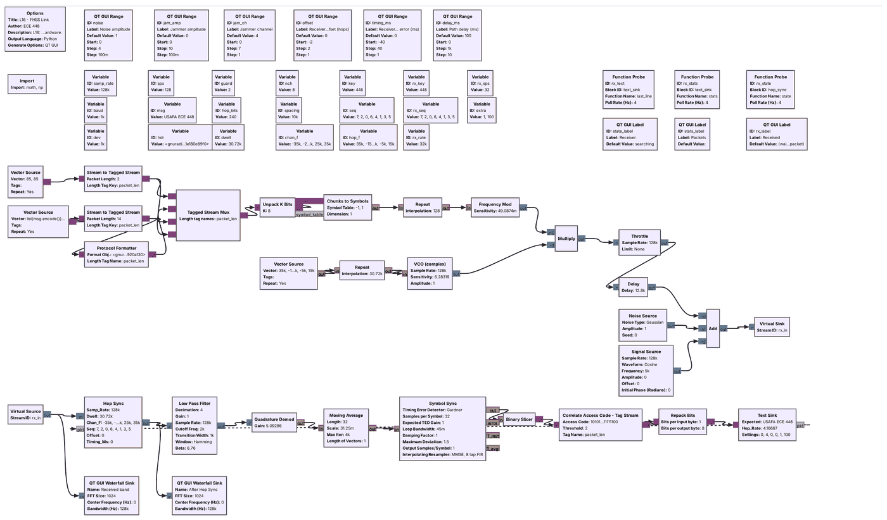
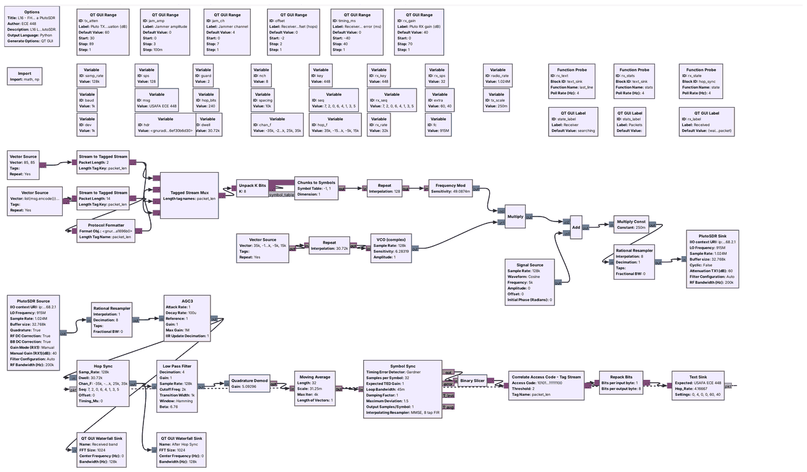

L16 Lab — Frequency Hopping#
Frequency Hopping
Hop a transmitter and keep a receiver on it.
L16 Lab · Module 6: Waveform Applications & RF Reverse Engineering · Dr. Neil Rogers
Learning Objectives
- I can implement FHSS transmission and reception, including hop-sequence synchronization.
From Lesson to Bench
Pre-Lab: run the link and work out your hopper’s settings.
Bench: build a hopper and a de-hopper, measure jamming and sync, then use a PlutoSDR.
Writeup: explain the jamming results, the guard bits, and the sync channel.
Lesson 16 hopped Lesson 8’s FSK packets over eight channels and kept a receiver on the same hops. Today you first build a hop synthesizer and a de-hopper yourself from standard blocks, then measure how the link holds up against a jammer and against sync errors, and then run the same link on a PlutoSDR. The lab packet has three parts, and you turn it in once, complete, before Lesson 17. Part 1, the Pre-Lab, is on your own before the period: run L16-fhss-link.grc once and work out the settings Part 2 uses. Part 2 is what you build and observe in class. Part 3, the Writeup, explains them.
Questions 1 to 5 run on your laptop and transmit nothing. Question 6 transmits, into a cable only, as the PlutoSDR frame below describes.
Part 1: Before the Period
L16-fhss-link.grcruns, locks, and decodesUSAFA ECE 448.Work out the hop timing and the guard time with 4 guard bytes.
Choose your hopper’s channel order, and work out its frequencies and timing.
Do the Pre-Lab before you arrive. Question 1 checks that the link flowgraph opens, locks, and decodes on your laptop: if GRC reports an error, the L5 lesson page lists the install checks, and EI before the lab is the place to fix it.
Question 2 is the arithmetic the flowgraphs need: the length of a hop, the hop rate, the cycle time, and the samples per hop when each packet carries 4 guard bytes at each end instead of 2, and how long each guard lasts; and the hop frequencies, hop time, and cycle time of the hopper you build in Question 3.
Pre-Lab Arithmetic
Setting |
How to get it |
|---|---|
Hop length |
bits per hop / 1000 baud |
Cycle time |
channels × hop length |
Guard time |
guard bits / 1000 baud |
Your hop time |
|
Your hop frequencies |
10 kHz × (k − 3.5) |
These are exact, from the flowgraph’s settings. Everything else in the lab, such as how many packets get through a jammer or how far the receiver’s timing can be off before packets are lost, you observe at the bench and record.
Part 2: Build a Hopper and a De-Hopper
Start GRC and choose File, New, QT GUI. Do not open
L16-fhss-tx.grc; build the hopper yourself from standard blocks.Set
samp_rateto 128000. Add Variablesdwell= 32000, the samples in one hop;order= your list of the 8 channels from Question 2(c), in square brackets; andhop_f=[10000*(k - 3.5) for k in order].Add a Vector Source: type float, vector
hop_f, repeat Yes. Then a Repeat: type float, interpolationdwell. Then a VCO (complex): sample ratesamp_rate, sensitivity 6.283185, amplitude 1. Its output is a tone that hops through your channels.Add a Signal Source: type complex, frequency 5000, amplitude 1. It is a jammer on channel 4. Add a Noise Source: type complex, amplitude 0.1. Add an Add block with 3 inputs and connect the VCO, the jammer, and the noise to it, then a Throttle: type complex, sample rate
samp_rate, and a QT GUI Waterfall Sink named “Transmitted band”, with bandwidthsamp_rate.Build a second Vector Source, Repeat, and VCO exactly like the first: this is the receiver’s hop synthesizer. Add a Multiply Conjugate block, with the Throttle’s output on its first input and the second VCO on its second, and a second Waterfall Sink named “De-hopped” on its output. Every arrow must be black.
Run it. Screenshot the window for Question 3(a).
Add a Delay block between the second VCO and the Multiply Conjugate, with delay
dwell. Run it again and screenshot the window for Question 3(b). Then set the delay to 2000 samples, 15.6 ms, run it, and describe the De-hopped waterfall for Question 3(c).
Part 2: Jamming

Open and run
L16-fhss-link.grcwith every slider at its default. Wait until the Receiver label reads “locked” and the Received label shows the message.Set the jammer amplitude to 2 on channel 4. Wait 30 s and record the Packets label for Question 4(a). The counts restart each time a slider moves.
Close the flowgraph. On the canvas, double-click the variable
nchand set it to 1, which keeps the link on one channel. Run it, set the jammer amplitude to 0.7, wait 30 s, and record the Packets label for Question 4(b). Close it, setnchback to 8, run it, set the jammer to 0.7 on channel 4, and record the Packets label again.Close the flowgraph. Set
nchto 2, run it, set the jammer to 2 on channel 1, and record the Packets label after 30 s. Do the same withnchset to 4. Setnchback to 8.Run it and wait for “locked”. Set the jammer amplitude to 3 on channel 7, the sync channel for key 448, while the receiver is locked, and record the Packets label after 30 s. Then close the flowgraph. The receiver locks about 0.1 s after a run starts, too fast to move a slider first, so on the canvas double-click the QT GUI Range
jam_ampand set its Default Value to 3, and setjam_ch’s Default Value to 7. Run it, and record the Receiver and Packets labels after 30 s, for Question 4(d). Set both Default Values back to 0 and 4.
Part 2: Sync
Set the jammer amplitude back to 0. Set the Receiver hop offset to +1, wait 30 s, and record the Packets label. Do the same at −1. Set it back to 0.
Close the flowgraph. Set the variable
guardto 4, run it, and wait for the receiver to lock. Set the Receiver timing error to −24, +24, −30, +30, −36, and +36 ms in turn, and record the Packets label after 30 s at each, for Question 5(b). Setguardback to 2 when you finish.With the timing error at 0, move the Path delay slider from 100 to 500 ms and start a stopwatch. The Packets label restarts at 0 correct when the slider moves; stop the watch when its correct count first rises above 0. Repeat three times, moving the slider between 100 and 500 ms, for Question 5(c).
If No Packets Arrive
If the Receiver label stays at “searching” or the Packets label stays at 0
Close the flowgraph and run it again with the sliders at their defaults; the receiver should lock within about 2 s. If it never locks, check that no jammer sits on the sync channel and that the noise amplitude is below 2. If it locks but no packets arrive, check that the hop offset and the timing error are 0. In your own hopper, check that both Vector Sources use the same hop_f, that both Repeat blocks use dwell, and that the VCO sensitivity is 6.283185, \(2\pi\), so that an input of 1 gives 1 Hz.
Part 2: Frequency Hopping on a PlutoSDR

You cable one Pluto’s TX port to its RX port through a 30 dB attenuator, at 915 MHz.
Connect the cable before the flowgraph runs, and never connect an antenna.
L16-fhss-pluto.grc is the Lesson 16 link with the simulated channel replaced by a PlutoSDR. The transmit half adds the jammer tone in software, scales the sum by 0.25 so that the signal and the largest jammer stay inside the radio’s range, raises the 128 kHz stream to 1.024 MS/s, and sends it from the Pluto’s TX port at 915 MHz. The hops span ±40 kHz around 915 MHz, so the Pluto never retunes. The receive half takes the signal from the RX port, lowers it to 128 kHz, and an AGC holds the band’s level steady before Hop Sync. The delay through the radio is unknown, and Hop Sync finds the hop timing the same way it found the simulated path delay. We have run this flowgraph only in simulation, with a model of the cable in place of the radio, so your bench is its first run on hardware.
In class we transmit only into a cable, into a shielded enclosure, or at very low power in an ISM band, and only when the lesson says to. This question transmits only into the cable between the Pluto’s own TX and RX ports, through an inline 30 dB SMA attenuator. The TX attenuation slider opens at 60 dB and cannot go below 30 dB. Never set TX attenuation below 30 dB or change the slider’s range; the RX input is rated to only a few dBm, and the transmitter can put out more than that.
What Success Looks Like

The figure is the PlutoSDR flowgraph run in simulation, with the Pluto Sink and Source replaced by a model of the cable that uses our estimate of the Pluto’s levels and a fixed delay of 37 ms between the ports. The real levels and delay will differ, but Hop Sync and the AGC should give the same picture. On the bench, look for the same three things: the hopping dashes on the received-band waterfall, a steady trace at 0 Hz after Hop Sync with the Receiver label reading “locked”, and the message in the Received label.
PlutoSDR Steps
With the Pluto unplugged, connect its TX port to its RX port with a short SMA cable and an inline 30 dB SMA attenuator. Do not connect an antenna, and do not connect the cable without the attenuator.
Plug the Pluto into USB and run
iio_info -sat the radioconda prompt; it should list a PlutoSDR context. The flowgraph uses the Pluto’s default address,ip:192.168.2.1.Open and run
L16-fhss-pluto.grc. Find the hopping dashes on the received-band waterfall and wait for the Receiver label to read “locked”. If it stays at “searching”, raise the RX gain a few dB at a time. Never set TX attenuation below 30 dB or change the slider’s range.Once
USAFA ECE 448decodes, screenshot the window for Question 6(a).Set the jammer amplitude to 2 on channel 4. Wait 30 s and record the Packets label for Question 6(b). Set the jammer back to 0.
Set the TX attenuation to 60, 70, 80, and 89 dB in turn. At each, wait 30 s and record the Receiver and Packets labels for Question 6(c). Stop the flowgraph and unplug the Pluto before you disconnect the cable.
Part 3: After the Lab
Describe how the jammer and the channel count changed the packets delivered, and why more jammer power took no more.
Explain what the guard bytes allow and take from each hop.
Explain the sync channel’s weakness and propose a fix.
The Writeup is Question 7, in three parts. Part (a) describes what happened to the packets delivered as you changed the number of channels and the jammer, and explains, from the De-hopped waterfall of Question 3, why a jammer stronger than the signal still takes only the hops on its own channel. Part (b) compares the timing errors the link tolerated with 2 guard bytes, from the lesson’s Timing Error frame, and with 4, from Question 5(b), and explains in words what the extra guard bytes take from each hop. Part (c) explains, from Question 4(d), why one jammed channel can keep a receiver from ever locking, and proposes a change to Hop Sync or to the packet that removes that weakness.
Lab Packet
L16-fhss-link.grc: the whole hopping link with sliders for the noise, the jammer, the path delay, and the receiver’s hop offset and timing error. No hardware needed.
L16-fhss-pluto.grc: the link on one PlutoSDR, transmitting at 915 MHz into a cable from its TX port to its RX port through a 30 dB attenuator. Needs a PlutoSDR.
Looking Ahead
Lesson 17 takes an unknown signal from capture to bits.
A hopper is one of the signals it has to find first.
Keep your hopper flowgraph and your tables. Lesson 17, on RF reverse engineering, starts from a capture of a signal nobody has described to you and works out its frequency, modulation, symbol rate, and bits. A hopping signal is harder to capture than a fixed one: a receiver parked on one channel sees only one hop in \(N\), and the first step is a waterfall wide enough to show the whole hop set, as the Transmitted band waterfall did today.